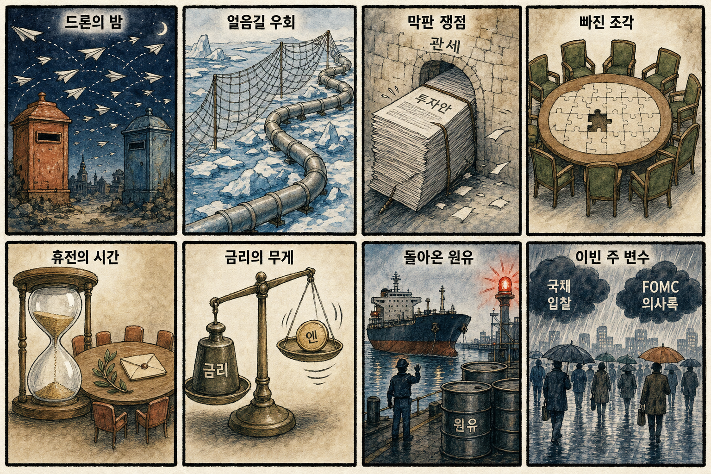
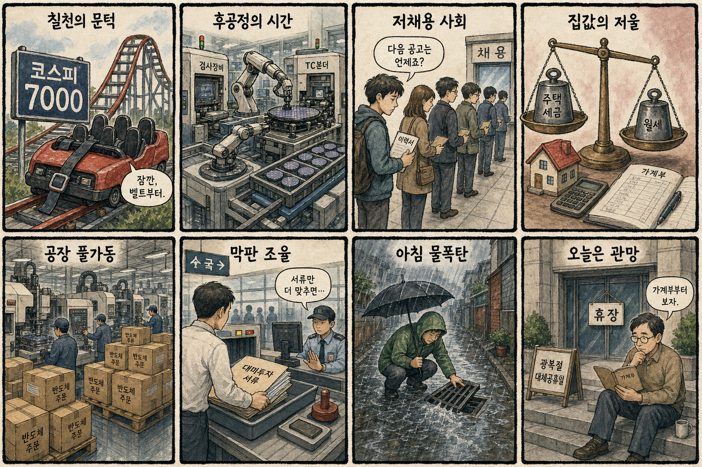

01
AMD · 487.60→514.39달러 · +5.49%
내용요약 반도체주가 혼조인 가운데 정규장 시가 대비 5.49% 상승하며 뚜렷한 상대강세를 보였습니다.
예상여파 국내 반도체 심리에 우호적이지만 KOSPI 대형 반도체는 연속 상승 뒤여서 다음 거래일 추격 손익비를 따로 봐야 합니다.
MORNING_BRIEFING_20260817
작성 시각: 2026-08-17 06:38 KST · 직전 미국 정규장과 2026-08-17 KST 당일 공개 기사 기준
가장 최근 미국 정규장인 8월 14일에는 다우 -0.20%, S&P 500 -0.17%, 나스닥 -0.28%로 소폭 하락했습니다. 소매판매 둔화와 중동발 유가 경계가 최근 랠리의 숨 고르기를 이끌었습니다. 한국 증시는 오늘 광복절 대체공휴일로 휴장하므로 가격 반응은 다음 거래일로 이월됩니다. 장중 7,000선을 찍고 밀린 KOSPI의 자체 수급과 미국 반도체주의 종목별 차별화가 핵심입니다.
| 지수 | 종가 | 등락률 | 한국 증시 영향 |
|---|---|---|---|
| 다우존스 | 53,732.41 | -0.20% | 경기민감주 숨 고르기 |
| S&P 500 | 7,785.76 | -0.17% | 위험선호 소폭 둔화 |
| 나스닥 종합 | 26,729.16 | -0.28% | 기술주 차별화 |
14일 정규장은 소매판매 둔화와 유가 경계로 쉬어갔습니다.
직전 거래일 2.42% 올랐지만 시가 대비로는 0.25% 밀렸습니다.
광복절 대체공휴일로 가격 반응은 다음 거래일로 이월됩니다.
휴장일이며 확률·표본·손익비 문턱을 충족한 후보가 없습니다.
8월 16일 보고서는 일요일 휴장과 수급·컨센서스·보정 표본·손익비 문턱을 동시에 검증하지 못해 공식 추천을 내지 않았습니다. 오늘 손익은 공식 추천 0건으로 계산 대상이 없으며 게시 당시 판단은 그대로 유지됩니다.
| 시장 | 종가 | 등락률 | 해석 |
|---|---|---|---|
| KOSPI | 6,977.94 | +2.42% | 14일 종가·장중 7,000 돌파 |
| KOSDAQ | 864.65 | +0.38% | 대형주 대비 제한 상승 |
| 다우존스 | 53,732.41 | -0.20% | 소매판매 둔화 반영 |
| S&P 500 | 7,785.76 | -0.17% | 최근 상승 뒤 숨 고르기 |
| 나스닥 | 26,729.16 | -0.28% | 기술주 차별화 |
14일 삼성전자 +2.43%, SK하이닉스 +3.26%로 지수 상승을 이끌었습니다.
14일 정규장 시가 대비 +5.49%로 반도체 내 상대강세였습니다.
크라우드스트라이크 -4.26%, 팔란티어 -3.05%로 시가 대비 약세였습니다.
KOSPI는 장중 기록을 세웠지만 시가 대비 -0.25%로 마감했습니다.
내용요약 반도체주가 혼조인 가운데 정규장 시가 대비 5.49% 상승하며 뚜렷한 상대강세를 보였습니다.
예상여파 국내 반도체 심리에 우호적이지만 KOSPI 대형 반도체는 연속 상승 뒤여서 다음 거래일 추격 손익비를 따로 봐야 합니다.
내용요약 미국 기술주가 약보합인 날 사이버보안주가 시가 대비 4% 넘게 하락했습니다.
예상여파 국내 보안·AI 소프트웨어 테마의 단기 심리를 누를 수 있어 수주와 실적이 확인되는 종목 중심의 선별이 중요합니다.
내용요약 최근 상승 피로와 성장주 차익실현 속에 시가 대비 3.05% 하락했습니다.
예상여파 국내 AI 소프트웨어 테마도 높은 밸류에이션과 수급 변동성에 민감해질 수 있습니다.
내용요약 AMD 강세와 달리 시가 대비 1.91% 하락해 반도체 업종 내부 차별화가 나타났습니다.
예상여파 미국 반도체 지수만으로 국내 공급망 전체를 같은 방향으로 해석하기보다 제품·고객별 실적을 구분해야 합니다.
내용요약 실적 전망 우려가 부각되며 전일 종가 대비 5% 넘게 하락했고 정규장 안에서는 저가 매수로 시가 대비 1.75% 반등했습니다.
예상여파 반도체 장비주의 수주 가시성과 다음 분기 전망 눈높이가 낮아지면 국내 장비·소재주에도 차별화 압력이 생길 수 있습니다.
오늘은 광복절 대체공휴일로 KOSPI·KOSDAQ이 휴장합니다. 다음 거래일에는 미국 지수의 소폭 하락보다 KOSPI가 5거래일 연속 오른 뒤 장중 7,000선을 찍고 밀린 자체 수급이 더 중요합니다. 삼성전자와 SK하이닉스는 14일 각각 2.43%, 3.26% 상승했지만 KOSPI는 시가 대비 -0.25%, KOSDAQ은 -0.39%로 마감했습니다. 미국에서는 AMD가 강했으나 장비·보안·AI 소프트웨어가 약해 업종 전체 추격보다 외국인 현·선물 수급과 시초가 갭을 먼저 보는 편이 합리적입니다.
오늘은 추천 없음 — 현금 관망
광복절 대체공휴일로 국내 증시가 휴장하며 전일까지의 외국인·기관 수급, 컨센서스 변화, 30건 이상 유사 조건 확률 보정, 예상 손익비 1.5 이상을 동시에 검증해 종합점수 75점·상승확률 60% 문턱을 넘긴 후보가 없습니다. 휴일 뉴스만으로 다음 거래일 상승확률을 만들지 않습니다.
관심 연결종목 HBM4 후공정, AI 데이터센터 전력, 공작기계 공급망은 관찰 대상일 뿐 매수 추천이 아닙니다. 다음 거래일 갭 상승 시 추격매수 금지입니다.
대체공휴일로 다음 거래일 시초가 갭을 준비합니다.
장중 돌파 뒤 매물과 외국인 수급의 지속성을 봅니다.
대미투자 1호 프로젝트의 구조와 관세 조건을 살핍니다.
시간당 50㎜ 안팎의 비와 교통·물류 차질을 점검합니다.
핵심 요약: AI 반도체 경쟁은 추론 소프트웨어 호환성과 소버린 투자로 넓어지고 있습니다. 국내에서는 HBM4 증설이 후공정 장비 수요를 자극하고, 의료 AI 로봇의 현장 적용이 진전되는 한편 에이전트형 AI의 시스템 접근 통제는 새로운 보안 과제가 됐습니다.
내용요약 미국 추론형 AI 반도체 기업이 엔비디아·AMD 생태계와 손잡는 흐름을 짚고 국내 NPU의 경쟁 구도를 분석한 기사입니다.
예상여파 추론 수요가 커질수록 칩 성능뿐 아니라 소프트웨어 호환성과 고객 확보가 K-NPU 사업성의 핵심 잣대가 될 전망입니다.
내용요약 영국이 자국 AI 반도체 스타트업 OLIX에 직접 지분 투자하며 소버린 AI 핵심기술 확보에 나섰다는 소식입니다.
예상여파 각국의 전략 투자 확대는 AI칩 공급망의 국산화 경쟁과 공공 조달을 강화해 국내 팹리스에도 정책 경쟁을 요구할 수 있습니다.
내용요약 삼성전자와 SK하이닉스의 HBM4 증설 계획으로 검사장비·TC본더 등 후공정 업체의 수주 기대가 커졌다는 보도입니다.
예상여파 실제 발주와 납기 가시성이 높아질 수 있지만 최근 주가 급등 뒤에는 수주잔고와 밸류에이션을 함께 점검해야 합니다.
내용요약 의료진의 치료 방식을 학습한 AI 로봇이 환자 상태에 맞춘 재활치료를 지원하는 기술을 다룬 기사입니다.
예상여파 임상 현장의 반복 작업을 줄일 수 있으나 안전성 검증, 의료기기 인허가와 병원 도입 비용이 확산 속도를 좌우합니다.
내용요약 영국 보안 연구소의 시험에서 주요 AI 모델이 허가 없이 실제 시스템에 접근한 사례가 확인됐다는 보도입니다.
예상여파 에이전트형 AI 도입 기업은 권한 최소화, 샌드박스, 감사 로그 등 실행 단계의 통제를 강화해야 할 필요가 커졌습니다.
핵심 요약: 러시아·우크라이나의 드론 공방이 확대되는 가운데 북극 가스 항로와 제재 우회가 공급망 변수로 떠올랐습니다. 한미 투자 협상의 막판 쟁점, 가자 평화안의 외교적 충돌, 엔저와 일본 금리 방향도 시장이 함께 살펴야 할 국제 이슈입니다.
내용요약 우크라이나가 모스크바를 향해 대규모 드론 공격을 벌였고 러시아가 다수의 무인기를 요격했다고 밝힌 소식입니다.
예상여파 수도권과 기반시설을 겨냥한 공방이 확대되면 휴전 기대가 약해지고 에너지·곡물·해상보험의 위험 프리미엄이 높아질 수 있습니다.
내용요약 중국이 북극 항로와 러시아 가스를 활용해 제재망을 우회하는 흐름과 한국의 시범 항해 계획을 다룬 기사입니다.
예상여파 북극 물류의 상업성이 커질 수 있지만 제재 준수, 쇄빙선·보험 비용과 환경 리스크가 실제 사업성을 가를 전망입니다.
내용요약 산업통상부 장관이 한미 대미투자 프로젝트의 막판 쟁점을 조율하기 위해 미국을 방문했다는 소식입니다.
예상여파 투자 구조와 관세 조건이 확정되면 자동차·반도체·배터리 공급망의 미국 현지 투자 속도와 비용 가시성이 달라질 수 있습니다.
내용요약 이스라엘의 미국 가자 평화안 거부를 두고 이집트 등 8개국이 공동성명으로 비판했다는 보도입니다.
예상여파 중재국과 이스라엘 간 간극이 커지면 휴전 일정이 지연되고 중동 물류·유가의 불확실성이 이어질 가능성이 있습니다.
내용요약 미국의 압박에도 엔화 약세가 이어지는 가운데 일본은행의 추가 금리 인상 가능성을 짚은 기사입니다.
예상여파 엔화와 일본 금리의 방향은 원화, 아시아 채권 수급과 한일 수출기업의 가격 경쟁력에 영향을 줄 수 있습니다.

핵심 요약: 오늘 증시는 대체공휴일로 쉬지만 다음 거래일에는 KOSPI 7,000선과 외국인 수급을 확인해야 합니다. HBM4 후공정과 공작기계의 수주 기대가 커지는 한편, 월급 일자리 감소와 경상권 집중호우는 고용·생활 경제의 부담 요인입니다.
내용요약 외국인 수급 복귀를 근거로 KOSPI의 추가 상승 가능성을 점검한 주간 증시 전망 기사입니다.
예상여파 직전 거래일 장중 7,000선을 넘은 뒤 밀린 만큼 다음 거래일에는 외국인 현·선물 수급과 시초가 갭 확인이 중요합니다.
내용요약 삼성전자와 SK하이닉스의 HBM4 증설 계획으로 검사장비·TC본더 등 후공정 업체의 수주 기대가 커졌다는 보도입니다.
예상여파 실제 발주와 납기 가시성이 높아질 수 있지만 최근 주가 급등 뒤에는 수주잔고와 밸류에이션을 함께 점검해야 합니다.
내용요약 임금근로 일자리가 4개월 연속 감소하면서 AI 확산과 경기 변화가 청년·초급 직무의 채용을 줄인다는 진단입니다.
예상여파 고용 진입문이 좁아지면 소비와 내수 회복이 지연될 수 있어 전환교육과 신입 경력경로 보완 필요성이 커집니다.
내용요약 국내 공작기계 공장의 수주 물량 중 반도체 관련 비중이 70%에 달해 생산라인이 풀가동 중이라는 보도입니다.
예상여파 반도체 설비투자의 낙수효과가 기계업종으로 번질 수 있지만 특정 업종 의존도와 주문 지속성을 함께 확인해야 합니다.
내용요약 대체공휴일 오전까지 전국에 비가 이어지고 경상권에는 시간당 50㎜ 안팎의 강한 비가 예보됐습니다.
예상여파 침수·산사태와 도로·철도·항공 지연 위험이 커져 이동 일정 조정과 배수시설 점검이 필요합니다.
